第2章 关系模型导论
关系模型仍然是商业数据处理应用的主要数据模型。与早期的网状模型和层次模型相比，它更加简单，减轻了程序员的工作，因而取得主导地位。在诞生后的半个世纪里，关系模型不断吸收新功能，保持了这一地位。新增功能包括复杂数据类型和存储过程等对象关系特性、XML 数据支持，以及支持半结构化数据的各种工具。关系模型不依赖特定的底层数据结构，因此即使出现新的存储方式，包括面向大规模数据挖掘的现代列存储，它仍能持续发挥作用。
本章首先介绍关系模型的基础。关系数据库已经形成丰富的理论体系。第6章和第7章将讨论有助于关系数据库模式设计的理论，第15章和第16章讨论高效处理查询的理论。第27章进一步介绍形式化关系语言，超出本章的基础内容。
2.1 关系数据库的结构
关系数据库由一组表组成，每张表都有唯一的名称。例如，图2.1的 instructor 表保存教师信息。表中有四个列标题：ID、name、dept_name 和 salary。每行记录一位教师的编号、姓名、系名和薪资。类似地，图2.2的 course 表保存课程信息，每门课程包括 course_id、title、dept_name 和 credits，分别表示课程编号、名称、系名和学分。每位教师由 ID 列的值标识，每门课程由 course_id 列的值标识。
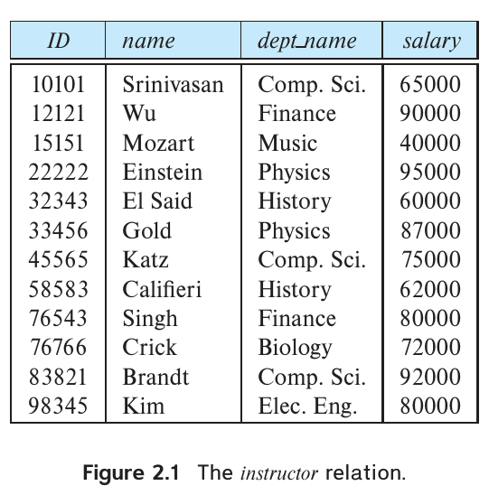
图2.1 教师关系 instructor。 ID为教师编号，name为姓名，dept_name为系名，salary为薪资。
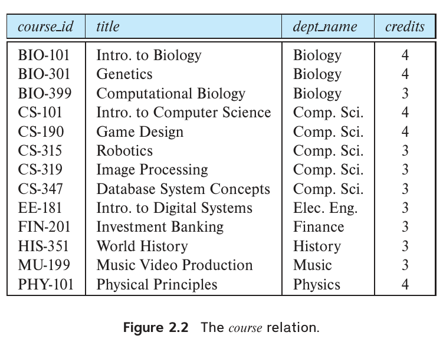
图2.2 课程关系 course。 course_id为课程编号，title为课程名称，dept_name为系名，credits为学分。
图2.3展示第三张表 prereq，保存每门课程的先修课程。它有 course_id 和 prereq_id 两列，每行包含一对课程标识符，第二门课程是第一门课程的先修课程。
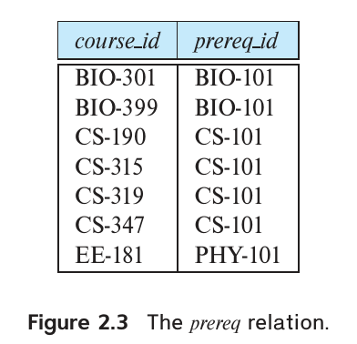
图2.3 先修课程关系 prereq。 course_id为课程编号，prereq_id为该课程的先修课程编号。
prereq 表中的一行表示两门课程之间存在先修联系。再如，instructor 表的一行可以看作一个特定 ID 与相应 name、dept_name、salary 值之间的联系。
一般来说，表中的一行表示一组值之间的联系。表是一组这样的联系，因此表的概念与数学中的关系概念密切对应，关系数据模型也由此得名。在数学术语中，元组就是值的一个序列或列表。n 个值之间的联系在数学上用 n 元组表示，即包含 n 个值的元组，对应表中的一行。
在关系模型中，关系指一张表，元组指一行，属性指表的一列。
图2.1中的 instructor 关系有四个属性：ID、name、dept_name 和 salary。我们用关系实例指关系的一个特定实例，也就是包含某个特定行集合的关系。图2.1的 instructor 实例有12个元组，分别对应12位教师。
本章用多个关系解释关系数据模型的各个基本概念。这些关系表示大学业务的一部分。为简化说明，我们省去了实际大学数据库中的许多数据。第6章和第7章将详细讨论判断关系结构是否合适的标准。
关系是元组的集合，因此元组出现的顺序无关紧要。无论像图2.1那样排序，还是像图2.4那样未排序，都不影响关系；两图中的关系相同，因为它们包含同一组元组。为便于说明，本书通常按第一个属性排序展示关系。
关系的每个属性都有一个允许取值的集合，称为该属性的域。例如，instructor 关系的 salary 属性的域是所有可能薪资值的集合，name 属性的域是所有可能教师姓名的集合。
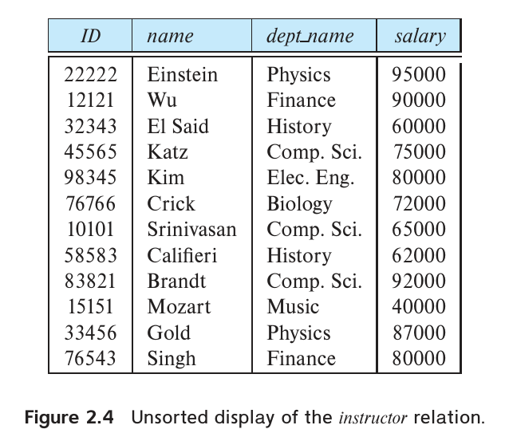
图2.4 未排序展示的教师关系 instructor。 ID为教师编号，name为姓名，dept_name为系名，salary为薪资；行顺序与图2.1不同，元组集合相同。
对于所有关系 r，我们要求 r 的全部属性的域都是原子的。如果域中的元素被视为不可再分的单位，这个域就是原子域。例如，假设 instructor 表有一个 phone_number 属性，能够保存教师的一组电话号码。那么它的域就不是原子的，因为域中的一个元素是一组电话号码，还包含各个电话号码这些组成部分。
判断依据在于数据库如何使用域中的元素，不能只看域本身。现在假设 phone_number 只保存一个电话号码。即使如此，如果把号码分为国家代码、区号和本地号码，仍是在把它视为非原子值。如果将每个号码视为单个不可再分的单位，phone_number 就具有原子域。
空值（null）是特殊值，表示值未知或不存在。例如，继续假设 instructor 关系包含 phone_number 属性。某位教师可能没有电话号码，也可能号码未公开。这时就必须使用空值，表示值未知或不存在。后面会看到，空值给数据库访问和更新带来许多困难，因此应尽可能避免。我们先假定没有空值，到3.6节再介绍空值对各类操作的影响。
关系相对严格的结构，为数据存储和处理带来若干重要的实际优势，后文将逐步说明。这种结构适用于定义明确、相对稳定的应用；对于数据本身以及数据类型、结构都随时间变化的应用，它就不够合适。现代组织需要在结构化数据的效率优势与预定义结构带来的限制之间取得平衡。
2.2 数据库模式
讨论数据库时，必须区分数据库模式和数据库实例：模式是数据库的逻辑设计，实例是数据库在某一时刻的数据快照。
关系的概念对应编程语言中的变量，关系模式的概念对应类型定义。
一般来说，关系模式由属性列表及各属性对应的域组成。到第3章讨论 SQL 时，我们才会关心每个属性的域的精确定义。
关系实例的概念对应编程语言中变量的值。变量值可能随时间变化，同样，关系更新时，关系实例的内容也会随时间变化；关系模式通常保持不变。
虽然区分关系模式和关系实例很重要，我们仍经常用同一个名称（如 instructor）指代两者。需要时，会明确说“instructor 模式”或“instructor 关系的一个实例”；上下文已经清楚时，就只使用关系名。
考虑图2.5的 department 关系，其模式为：
department (dept_name, building, budget)
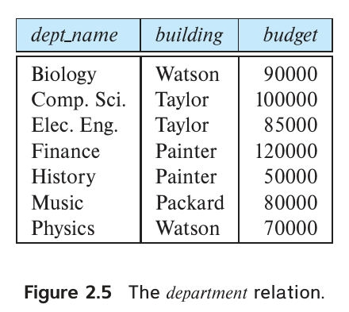
图2.5 系关系 department。 dept_name为系名，building为楼宇，budget为预算。
属性 dept_name 同时出现在 instructor 和 department 模式中。这种重复有明确用途：在关系模式中采用共同属性，可以把不同关系的元组联系起来。例如，要查找所有在 Watson 楼工作的教师，先从 department 关系找出位于 Watson 的全部系的 dept_name，再针对每个系，到 instructor 中查找具有相应 dept_name 的教师信息。
大学中的每门课程可能在不同学期多次开设，甚至在同一学期多次开设。我们需要一个关系描述每次开课，也就是一个教学班（section）。其模式为：
section (course_id, sec_id, semester, year, building, room_number, time_slot_id)
图2.6展示 section 关系的一个实例。
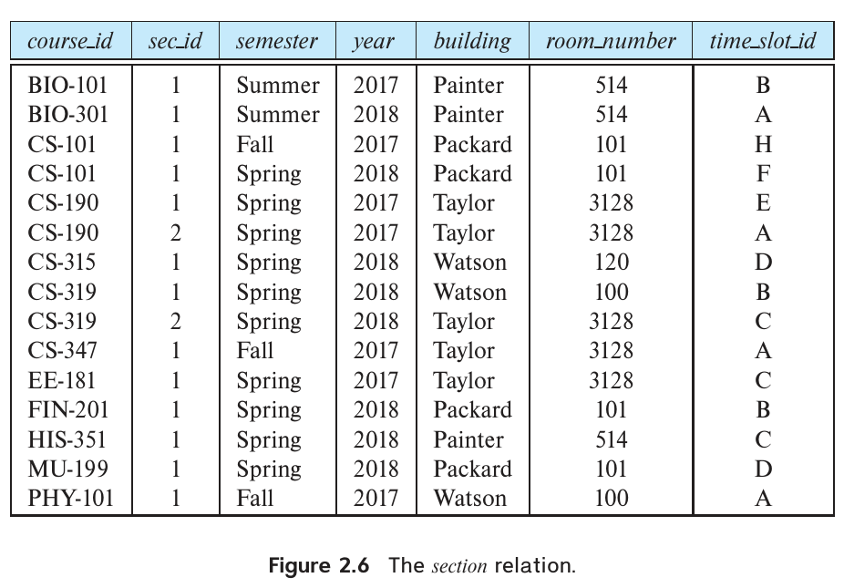
图2.6 教学班关系 section。 course_id为课程编号，sec_id为教学班编号，semester为学期，year为年份，building为楼宇，room_number为教室编号，time_slot_id为上课时间段编号；Summer、Fall、Spring分别为夏季、秋季、春季学期。
还需要一个关系描述教师与其所授教学班之间的联系，其关系模式为：
teaches (ID, course_id, sec_id, semester, year)
图2.7展示 teaches 关系的一个实例。
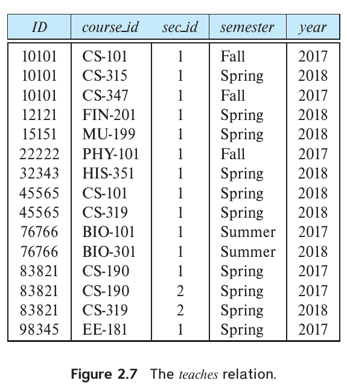
图2.7 授课关系 teaches。 ID为教师编号，course_id为课程编号，sec_id为教学班编号，semester为学期，year为年份；Fall、Spring、Summer分别表示秋季、春季、夏季学期。
可以想见，真实大学数据库还会维护许多其他关系。除了已经列出的 instructor、department、course、section、prereq 和 teaches，本书还会使用以下关系：
student (ID, name, dept_name, tot_cred)
advisor (s_id, i_id)
takes (ID, course_id, sec_id, semester, year, grade)
classroom (building, room_number, capacity)
time_slot (time_slot_id, day, start_time, end_time)
2.3 键
我们必须能够说明如何区分同一关系中的不同元组，这通过元组的属性表达。元组的属性值必须能够唯一标识该元组，也就是说，关系中不能存在两个元组，其所有属性值都完全相同。¹
超键是一组属性，包含一个或多个属性，其值合在一起能够唯一标识关系中的元组。例如，instructor 的 ID 属性足以区分不同教师元组，因此是一个超键。name 属性则不是超键，因为多位教师可能同名。
形式化地，设 R 表示关系 r 的模式中的属性集。如果说 R 的子集 K 是 r 的超键，就意味着我们只考虑满足以下限制的关系实例：任意两个不同元组在 K 的全部属性上不能具有相同的值。即若 t₁、t₂ 属于 r 且 t₁ ≠ t₂，则 t₁.K ≠ t₂.K。
¹ 商用数据库系统放宽了关系必须是集合的要求，允许重复元组。第3章将进一步讨论。
超键可能包含多余属性。例如，ID 与 name 的组合是 instructor 的超键。如果 K 是超键，那么 K 的任何超集也是超键。我们通常关心那些任何真子集都不是超键的超键，这种极小超键称为候选键。
一个关系可能有多个不同的属性集合可以作为候选键。假设 name 与 dept_name 的组合足以区分 instructor 的成员，那么 {ID} 和 {name, dept_name} 都是候选键。虽然 ID 与 name 的组合也能区分教师元组，但 {ID, name} 不是候选键，因为单独的 ID 已经是候选键。
数据库设计者从候选键中选出一个，作为标识关系中元组的主要方式，这个候选键称为主键。无论主键、候选键还是超键，键都是整个关系的性质，不能归于某个单独元组。关系中的任意两个元组都不允许同时具有相同的键属性值。指定键体现了所建模现实组织的一项约束，因此主键也称为主键约束。
通常，关系模式的主键属性列在其他属性之前。例如，department 的 dept_name 是主键，所以列在第一位。主键属性还加下划线表示。
考虑 classroom 关系：
classroom (building, room_number, capacity)
主键由 building 和 room_number 两个属性组成，下划线表示它们属于主键。任何一个属性单独都无法唯一标识教室，二者结合则可以。再考虑 time_slot 关系：
time_slot (time_slot_id, day, start_time, end_time)
每个教学班都有对应的 time_slot_id。time_slot 关系说明某个时间段在每周哪几天、什么时间上课。例如，时间段 A 可能在周一、周三和周五上午8:00至8:50上课。一个时间段还可能在同一天安排多个不同时间的课次，因此 time_slot_id 与 day 合在一起仍无法唯一标识元组。time_slot 的主键由 time_slot_id、day 和 start_time 组成，这三个属性共同唯一标识一门课程的一次上课时段。
选择主键必须谨慎。前面提到，人的姓名不够，因为可能有许多人同名。在美国，一个人的社会保障号码可以作为候选键。由于非美国居民通常没有社会保障号码，跨国组织必须自行生成唯一标识符，或者选择其他属性的某个唯一组合作为键。
主键的属性值应永不改变，或很少改变。例如，地址很可能变化，不应成为主键的一部分；社会保障号码则保证不会改变。组织生成的唯一标识符通常也不变，但两个组织合并时除外：双方可能发放过相同标识符，为保证唯一性，可能需要重新分配。
图2.8列出大学示例模式中的全部关系，主键属性以下划线标明。
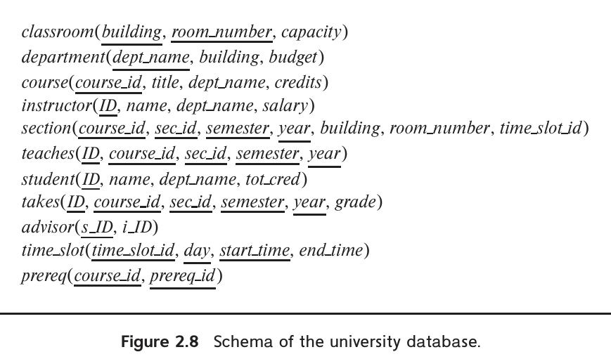
图2.8 大学数据库模式。 classroom、department、course、instructor、section、teaches、student、takes、advisor、time_slot、prereq分别表示教室、系、课程、教师、教学班、授课、学生、选课、导师、上课时间段及先修课程。capacity为容量，tot_cred为总学分，grade为成绩，s_ID和i_ID分别为学生与导师编号，day为星期，start_time与end_time为开始及结束时间。带下划线的属性共同组成各关系的主键。
接下来考虑约束关系内容的另一种约束，称为外键约束。以 instructor 的 dept_name 为例：教师元组的系名如果无法对应 department 中的某个系，就不合理。因此，在任何数据库实例中，对 instructor 中任一元组 tₐ，department 都必须存在某个元组 tᵦ，使 tₐ 的 dept_name 值等于 tᵦ 的主键 dept_name 值。
从关系 r₁ 的属性（组）A 到关系 r₂ 的主键 B 的外键约束规定：在任何数据库实例中，r₁ 每个元组的 A 值，都必须等于 r₂ 某个元组的 B 值。属性集 A 称为 r₁ 中参照 r₂ 的外键。r₁ 称为该外键约束的参照关系，r₂ 称为被参照关系。
例如，instructor 中的 dept_name 是参照 department 的外键，dept_name 是 department 的主键。同样，section 的 building 与 room_number 两个属性合起来，构成参照 classroom 的外键。
在外键约束中，被参照属性必须是被参照关系的主键。更一般的参照完整性约束则放宽了这一要求，不要求被参照属性一定构成主键。
例如，section 中 time_slot_id 属性的值必须存在于 time_slot 关系的 time_slot_id 属性中。这就是参照完整性约束。一般而言，参照完整性约束要求：参照关系任何元组中指定属性的值，也出现在被参照关系至少一个元组的指定属性中。
注意，time_slot_id 虽然是 time_slot 主键的一部分，但单独并不构成主键，因此无法用外键约束实施上述要求。外键约束是参照完整性约束的特殊情况，其中被参照属性构成被参照关系的主键。目前数据库系统通常支持外键约束，但不支持被参照属性并非主键的参照完整性约束。
译注：本段原文将属性名写为
time_slot；根据前文与图2.8，所指应为time_slot_id，译文据此订正。
2.4 模式图
数据库模式及其主键、外键约束可以用模式图表示。图2.9给出了大学组织的模式图。每个关系用一个方框表示，顶部用蓝色写关系名，框内列出属性。
主键属性加下划线。外键约束用箭头表示，从参照关系的外键属性指向被参照关系的主键。对于不属于外键约束的参照完整性约束，我们使用双箭头。图2.9中，从 section 的 time_slot_id 指向 time_slot 的 time_slot_id 的双箭头，表示 section.time_slot_id 到 time_slot.time_slot_id 的参照完整性约束。
许多数据库系统提供图形设计工具，用于创建模式图。² 第6章将详细讨论另一种模式图形表示——实体—联系图。虽然二者外观有些相似，但表示法相当不同，不应混淆。
² 用双箭头表示参照完整性约束的方法由本书作者引入，据我们所知，尚无工具支持；主键与外键的表示法则已广泛使用。
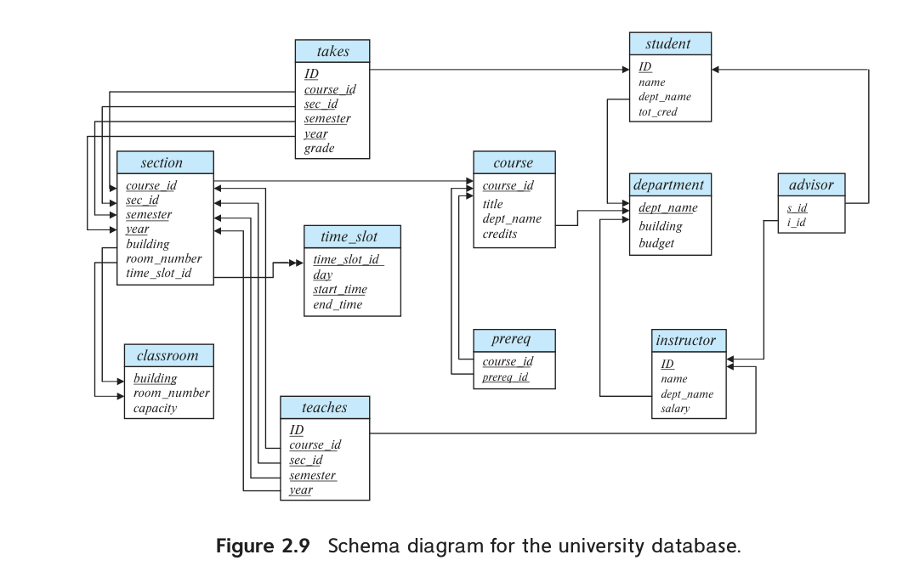
图2.9 大学数据库模式图。 各框为关系，框内为属性；关系名和属性的中文含义见图2.8及前述各表。s_id、i_id分别为学生编号和导师编号。单箭头表示外键，双箭头表示文中讨论的参照完整性约束。
2.5 关系查询语言
查询语言是用户向数据库请求信息的语言，其层次通常高于一般编程语言。查询语言可分为命令式、函数式和声明式。在命令式查询语言中，用户指示系统对数据库执行特定的操作序列，以计算所需结果。这类语言通常有状态变量的概念，计算过程中会更新这些变量。
在函数式查询语言中，计算表示为函数求值，函数可以作用于数据库中的数据，也可以作用于其他函数的结果。函数没有副作用，不更新程序状态。³ 在声明式查询语言中，用户描述所需信息，无须给出获取信息的具体步骤或函数调用序列。所需信息通常以某种数理逻辑表达，如何取得信息由数据库系统决定。
³ 本书早期版本曾用“过程式语言”指基于过程调用的语言，其中包括函数式语言。但这个术语也广泛用于指命令式语言。为避免混淆，本节不再使用该术语。
存在多种“纯”查询语言。
- 2.6节介绍的关系代数是一种函数式查询语言，⁴ 构成 SQL 查询语言的理论基础。
- 第27章（在线提供）介绍的元组关系演算和域关系演算属于声明式语言。
这些查询语言简洁、形式化，没有商用语言中的“语法糖”，但能说明从数据库提取数据的基本技术。
实际使用的 SQL 等查询语言，融合了命令式、函数式和声明式方法的成分。第3章至第5章将介绍应用广泛的 SQL。
2.6 关系代数
关系代数由一组运算组成，它们以一个或两个关系为输入，生成一个新关系作为结果。
选择、投影、重命名等运算只作用于一个关系，称为一元运算；并、笛卡尔积、集合差等运算作用于一对关系，称为二元运算。
虽然关系代数运算是 SQL 查询语言的基础，数据库系统并不允许用户直接用关系代数编写查询。不过，已有一些关系代数实现供学生练习。本书网站 db-book.com 的 Laboratory Material 链接下，提供了若干实现的入口。
需要记住，关系是元组的集合，不能含重复元组。在实际数据库系统中，除非有特定约束禁止，表可以包含重复项。但讨论形式化关系代数时，我们遵守数学集合的定义，要求消除重复。第3章将讨论如何扩展关系代数，使其适用于可以包含重复元素的多重集。
⁴ 与现代函数式语言不同，关系代数只支持少量预定义函数，它们定义了关系上的一种代数。
2.6.1 选择运算
选择运算选出满足给定谓词的元组，用小写希腊字母 σ 表示。谓词写在 σ 的下标位置，作为参数的关系放在后面的括号中。例如，要从 instructor 关系中选择 Physics 系的教师元组，可写为：
σdept_name = “Physics”(instructor)
如果 instructor 如图2.1所示，查询结果就是图2.10的关系。
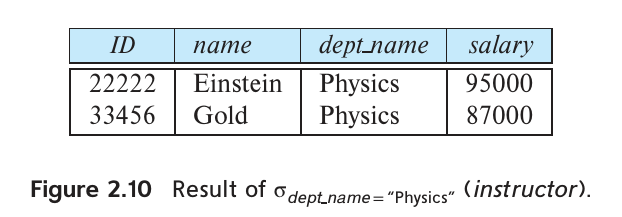
图2.10 选择 Physics 系教师的结果。 ID、name、dept_name、salary分别为教师编号、姓名、系名和薪资。
要查找所有薪资超过90,000美元的教师，可写为：
σsalary > 90000(instructor)
选择谓词一般允许使用 =、≠、<、≤、> 和 ≥ 比较。还可以用与（∧）、或（∨）、非（¬）连接多个谓词，形成更大的谓词。例如，要查找 Physics 系中薪资超过90,000美元的教师，可写为：
σdept_name = “Physics” ∧ salary > 90000(instructor)
选择谓词也可以比较两个属性。例如，在 department 关系中查找系名与楼名相同的系，可写为：
σdept_name = building(department)
2.6.2 投影运算
假设希望列出所有教师的 ID、name 和 salary，但不关心 dept_name。投影运算能够生成这样的关系。投影是一元运算，返回从参数关系中去掉某些属性后得到的关系。关系是集合，所以重复行会被消除。投影用大写希腊字母 Π 表示，结果中需要的属性列在 Π 的下标位置，参数关系放在后面的括号中。查询写为：
ΠID, name, salary(instructor)
图2.11展示该查询的结果关系。
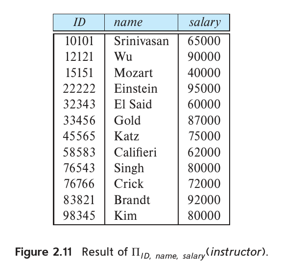
图2.11 投影 ID、name、salary 的结果。 ID、name、salary分别为教师编号、姓名和薪资。
基本投影运算 ΠL(E) 的列表 L 中只允许出现属性名。推广后的形式允许 L 包含涉及属性的表达式。例如，可以用：
ΠID, name, salary/12(instructor)
得到每位教师的月薪。
2.6.3 关系运算的组合
关系运算的结果仍然是关系，这一点很重要。考虑更复杂的查询：“找出 Physics 系所有教师的姓名。”可写为：
Πname(σdept_name = “Physics”(instructor))
这里，投影运算的参数是一个求值结果为关系的表达式，无须直接给出某个关系名。
关系代数运算的输出和输入属于相同类型，都是关系，因此可以组合为关系代数表达式。这种组合与把 +、−、∗、÷ 等算术运算组合为算术表达式类似。
2.6.4 笛卡尔积运算
笛卡尔积运算用 × 表示，可以组合任意两个关系中的信息。关系 r₁ 与 r₂ 的笛卡尔积写作 r₁ × r₂。
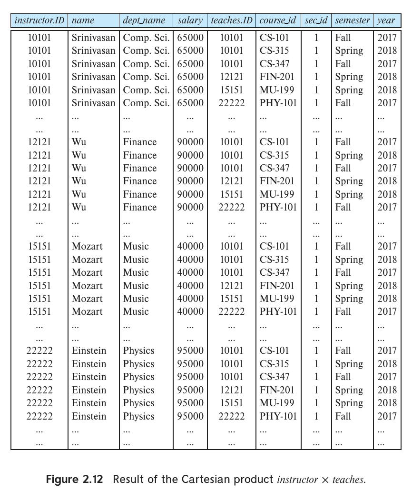
图2.12 笛卡尔积 instructor × teaches 的结果。 instructor.ID与teaches.ID分别是两个输入关系的教师编号；其余列依次为姓名、系名、薪资、课程编号、教学班编号、学期和年份。省略号表示原图未逐一列出的元组。
数据库关系的笛卡尔积与数学上集合的笛卡尔积定义略有不同。数学中的 r₁ × r₂ 产生由两个元组组成的对 (t₁, t₂)，关系代数则将 t₁ 与 t₂ 连接为一个元组，如图2.12所示。
同一个属性名可能同时出现在 r₁ 和 r₂ 的模式中，因此需要命名规则来区分。这里采用给属性加上原关系名前缀的方法。例如，r = instructor × teaches 的关系模式为：
(instructor.ID, instructor.name, instructor.dept_name, instructor.salary,
teaches.ID, teaches.course_id, teaches.sec_id, teaches.semester, teaches.year)
这样可以区分 instructor.ID 与 teaches.ID。只出现在一个输入模式中的属性，通常省略关系名前缀，不会产生歧义。于是，r 的模式可写为：
(instructor.ID, name, dept_name, salary,
teaches.ID, course_id, sec_id, semester, year)
这一约定要求笛卡尔积的两个参数关系名称不同。在某些情况下会产生问题，例如关系与自身做笛卡尔积。使用关系代数表达式的结果做笛卡尔积时，也有类似问题：需要先给结果关系命名，才能引用其中的属性。2.6.8节将说明如何用重命名运算解决这些问题。
知道了 r = instructor × teaches 的模式之后，r 中有哪些元组？我们从 instructor（图2.1）和 teaches（图2.7）各取一个元组，将每一对可能的元组组合成 r 的一个元组。因此 r 很大，图2.12只展示了其中一部分。
假设 instructor 有 n₁ 个元组，teaches 有 n₂ 个元组。从每个关系各取一个元组，共有 n₁ × n₂ 种组合，所以 r 有 n₁ × n₂ 个元组。在本例中，r 的某些元组里，instructor.ID 与 teaches.ID 的值可能不同。
一般地，对于关系 r₁(R₁) 和 r₂(R₂)，r₁ × r₂ 是关系 r(R)，模式 R 由 R₁ 与 R₂ 连接而成。r 包含所有满足以下条件的元组 t：r₁ 中存在 t₁，r₂ 中存在 t₂，且 t 在 R₁ 属性上的值与 t₁ 相同，在 R₂ 属性上的值与 t₂ 相同。
2.6.5 连接运算
假设要查找所有教师的信息，以及他们教授过的全部课程的 course_id。这需要同时使用 instructor 和 teaches。二者的笛卡尔积虽然组合了两个关系的信息，却把每位教师都与每门开设过的课程配对，无论该教师是否教过这门课。
由于笛卡尔积把 instructor 的每个元组与 teaches 的每个元组组合，如果某位教师教过某门课程，而且 teaches 中有记录，那么 instructor × teaches 中必定存在包含该教师姓名、同时满足 instructor.ID = teaches.ID 的元组。因此，写出：
σinstructor.ID = teaches.ID(instructor × teaches)
就只保留教师与其实际教授课程相对应的元组。
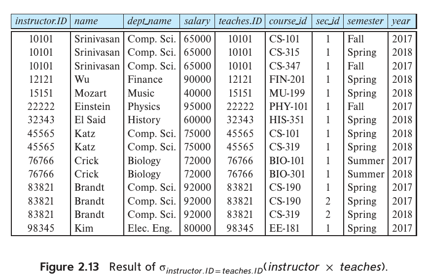
图2.13 按教师 ID 相等条件选择笛卡尔积的结果。 列依次为instructor中的教师编号、姓名、系名、薪资，以及teaches中的教师编号、课程编号、教学班编号、学期和年份。
图2.13展示该表达式的结果。Gold、Califieri 和 Singh 没有教授任何课程，至少 teaches 中没有相应记录，因此未出现在结果中。
这个表达式使教师 ID 出现两次。添加一次投影，删除 teaches.ID 列，就可以处理这一重复。
连接运算把选择与笛卡尔积合为一个运算。
考虑关系 r(R) 和 s(S)，设 θ 是模式 R ∪ S 中属性上的谓词。连接运算 r ⋈θ s 定义为：
r ⋈θ s = σθ(r × s)
因此，σinstructor.ID = teaches.ID(instructor × teaches) 也可以写为 instructor ⋈instructor.ID = teaches.ID teaches。
2.6.6 集合运算
考虑查询：找出在2017年秋季学期、2018年春季学期，或两个学期都开设的全部课程。信息在 section 关系中（图2.6）。要找出2017年秋季开设的课程，可写为：
Πcourse_id(σsemester = “Fall” ∧ year = 2017(section))
要找出2018年春季开设的课程，可写为：
Πcourse_id(σsemester = “Spring” ∧ year = 2018(section))
要回答原查询，需要两个集合的并集，即出现在任意一个或两个关系中的全部 course_id。二元并运算与集合论一样，用 ∪ 表示：
Πcourse_id(σsemester = “Fall” ∧ year = 2017(section)) ∪ Πcourse_id(σsemester = “Spring” ∧ year = 2018(section))
结果如图2.14所示。虽然2017年秋季有3门不同课程，2018年春季有6门，结果却只有8个元组。关系是集合，因此两个学期都开设的 CS-101 等重复值只保留一次。
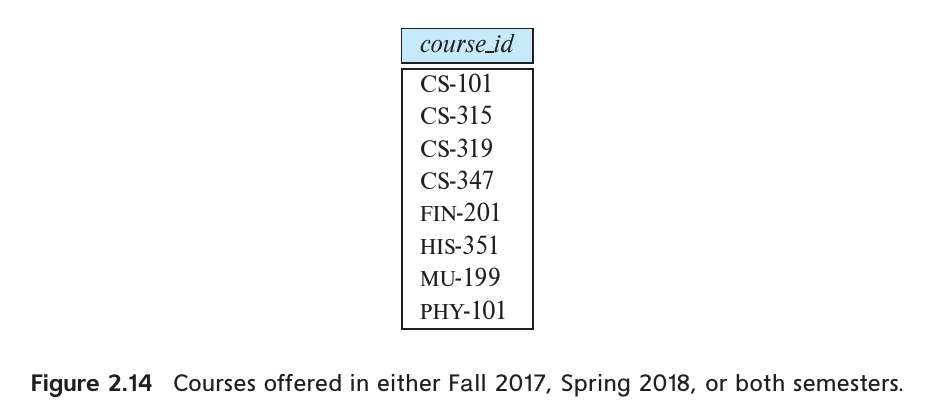
图2.14 2017年秋季或2018年春季开设的课程。 course_id为课程编号；并集去除重复课程。
本例中，参与并运算的两个集合都由 course_id 值组成。一般而言，要让并运算有意义，必须满足：
- 两个输入关系的属性数相同。关系的属性数量称为它的元数。
- 属性关联类型时，对于每个 i，两个输入关系的第 i 个属性类型相同。
这样的关系称为相容关系。
例如，instructor 与 section 的属性数不同，二者做并运算没有意义。虽然 instructor 与 student 都有4个属性，但它们的第4个属性分别是 salary 与 tot_cred，类型不同，通常也不适合进行并运算。
交运算用 ∩ 表示，查找两个输入关系共有的元组。表达式 r ∩ s 返回同时属于 r 和 s 的元组。与并运算一样，交运算必须在相容关系之间进行。
若要找出2017年秋季和2018年春季都开设的课程，可用集合交：
Πcourse_id(σsemester = “Fall” ∧ year = 2017(section)) ∩ Πcourse_id(σsemester = “Spring” ∧ year = 2018(section))
图2.15展示查询结果。
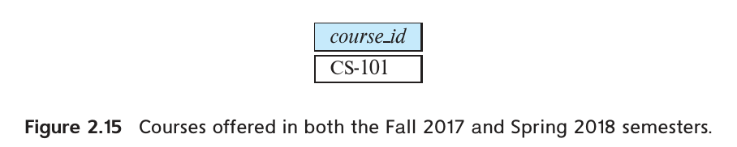
图2.15 2017年秋季和2018年春季都开设的课程。 course_id为课程编号。
集合差运算用 − 表示，查找属于一个关系但不属于另一个关系的元组。表达式 r − s 返回属于 r、但不属于 s 的元组。
要找出2017年秋季开设、但2018年春季未开设的课程，可写为：
Πcourse_id(σsemester = “Fall” ∧ year = 2017(section)) − Πcourse_id(σsemester = “Spring” ∧ year = 2018(section))
图2.16展示结果。
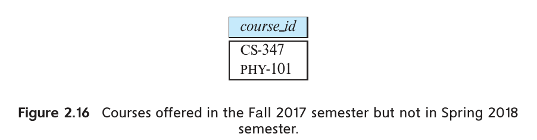
图2.16 2017年秋季开设但2018年春季未开设的课程。 course_id为课程编号。
与并运算一样，集合差必须在相容关系之间进行。
2.6.7 赋值运算
编写关系代数表达式时，有时可以将其中一部分赋给临时关系变量，使表达更方便。赋值运算用 ← 表示，作用类似编程语言中的赋值。例如，前面查找2017年秋季和2018年春季都开设的课程，可以写为：
courses_fall_2017 ← Πcourse_id(σsemester = “Fall” ∧ year = 2017(section))
courses_spring_2018 ← Πcourse_id(σsemester = “Spring” ∧ year = 2018(section))
courses_fall_2017 ∩ courses_spring_2018
最后一行显示查询结果，前两行将查询结果赋给临时关系。执行赋值本身不会向用户显示关系，它把 ← 右侧表达式的结果赋给左侧关系变量，后续表达式可以使用这个变量。
使用赋值后，查询可以写成一个顺序程序：先执行一系列赋值，再计算一个表达式，将其值显示为查询结果。在关系代数查询中，赋值必须针对临时关系变量；对永久关系赋值则属于数据库修改。赋值并没有增强关系代数的表达能力，但便于表达复杂查询。
2.6.8 重命名运算
数据库中的关系有名字，但关系代数表达式的结果没有可供引用的名字。有时给结果命名很有用，重命名运算用小写希腊字母 ρ 表示，提供这一功能。给定关系代数表达式 E，表达式
ρx(E)
返回 E 的结果，并将其命名为 x。
关系 r 本身也是一个简单的关系代数表达式，因此也可以对 r 进行重命名，得到名称不同、内容相同的关系。有些查询需要多次使用同一关系，重命名可以为每次使用赋予不同名称。
重命名还有第二种形式。假设 E 的元数为 n，则
ρx(A₁, A₂, …, Aₙ)(E)
返回 E 的结果，将关系命名为 x，并将属性重命名为 A₁、A₂、…、Aₙ。当关系代数运算包含属性表达式时，可以用这种形式为结果属性命名。
以查询“找出工资高于 ID 为12121的教师的所有教师的 ID 和姓名”为例，说明关系重命名。图2.1中，12121对应教师 Wu。
这个查询有多种写法。为说明重命名，我们比较每位教师与 ID 为12121的教师的薪资。难点是要在同一个表达式中两次引用 instructor：一次取得每位教师薪资，另一次取得12121的薪资。重命名使两次引用可以采用不同名称。本例用 i 表示扫描 instructor 以寻找答案中的教师，用 w 表示扫描 instructor 以取得12121的薪资：
Πi.ID, i.name(σi.salary > w.salary(ρi(instructor) × σw.id = 12121(ρw(instructor))))
译注：原公式写作
w.id，与关系模式中的ID大小写不同；按模式引用时应为w.ID。
注2.1 其他关系运算
除了前述关系代数运算，还有一些常用运算。下面先概述，后文将结合等价 SQL 结构详细介绍。
聚合运算对查询返回的值集合计算函数，例如平均值、求和、最小值和最大值。还可以先把值分组，再分别聚合，例如计算各个系的平均薪资。3.7节（原书第97页注3.2）将详细讨论。
自然连接用一个隐含谓词替换 ⋈θ 中的 θ，要求左右两个关系模式中同名属性的值相等。这种记法方便，但重复使用的查询可能在关系模式变化后仍被使用，由此带来风险。4.1.1节将介绍自然连接。
回想 instructor 与 teaches 的连接，没有教过课的教师不会出现在结果中。外连接通过在缺失值的位置插入空值，允许保留这些元组。4.1.3节（原书第136页注4.1）将介绍。
严格来说，重命名并非必需，因为可以用位置记法隐式指称属性：$1、$2、…分别表示第一个、第二个等属性。这种方法也能引用关系代数运算结果的属性。但位置由数字表示，比容易记忆的属性名更不便于人使用，因此本书不采用位置记法。
2.6.9 等价查询
一个查询往往有多种关系代数写法。考虑下面的查询，找出 Physics 系教师所授课程的信息：
σdept_name = “Physics”(instructor ⋈instructor.ID = teaches.ID teaches)
另一种写法是：
(σdept_name = “Physics”(instructor)) ⋈instructor.ID = teaches.ID teaches
两者有细微差别：第一个查询先连接 instructor 与 teaches，再选择 dept_name 为 Physics 的元组；第二个查询先在 instructor 上选择 dept_name 为 Physics 的元组，再执行连接。
两个查询的形式不同，但彼此等价，即在任何数据库上都产生相同结果。
数据库查询优化器通常分析表达式要计算什么结果，并寻找高效的计算方法，无须严格按查询指定的步骤执行。关系代数的代数结构便于寻找高效且等价的其他表达式，第16章将介绍这一点。
2.7 小结
- 关系数据模型以一组表为基础。用户可以查询表、插入新元组、删除元组，以及更新或修改元组。有多种语言可以表达这些操作。
- 关系模式描述逻辑设计，关系实例描述某个时刻的内容。数据库模式与数据库实例也以类似方式定义。关系模式包含属性，还可以包含属性类型及主键、外键等约束。
- 关系的超键是一组属性，其值保证能唯一标识元组。候选键是极小超键，即它本身是超键，但任何真子集都不是超键。选择一个候选键作为关系的主键。
- 从关系 r₁ 的属性（组）A 到关系 r₂ 的主键 B 的外键约束规定：r₁ 每个元组的 A 值，都必须是 r₂ 某个元组的 B 值。r₁ 称为参照关系，r₂ 称为被参照关系。
- 模式图以图形表示数据库模式，展示关系、属性、主键和外键。
- 关系查询语言定义一组以表为操作对象、以表为输出的运算。这些运算可以组合成表达式，表示所需查询。
- 关系代数提供一组以一个或多个关系为输入、以关系为输出的运算。SQL 等实用查询语言以关系代数为基础，并增添许多实用语法。
- 关系代数定义了在表上运算、输出表的代数操作。组合这些运算可以表达所需查询。这套代数定义了 SQL 等关系查询语言内部使用的基本操作。
复习术语
- 表、关系、元组、属性、关系实例
- 域、原子域、空值
- 数据库模式、数据库实例、关系模式
- 键：超键、候选键、主键、主键约束
- 外键约束：参照关系、被参照关系
- 参照完整性约束
- 模式图
- 查询语言类型：命令式、函数式、声明式
- 关系代数、关系代数表达式
- 关系代数运算：选择 σ、投影 Π、笛卡尔积 ×、连接 ⋈、并 ∪、集合差 −、集合交 ∩、赋值 ←、重命名 ρ
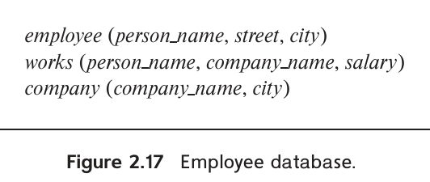
图2.17 雇员数据库。 employee为雇员，works为任职，company为公司；person_name为姓名，street为街道，city为城市，company_name为公司名称，salary为薪资。
实践习题
2.1 考虑图2.17的雇员数据库。哪些属性适合作为主键？
2.2 考虑从 instructor 的 dept_name 属性到 department 关系的外键约束。分别举出对这些关系执行插入、删除而违反该外键约束的例子。
2.3 考虑 time_slot 关系。一个特定时间段每周可能上多次课，请解释为何 day 和 start_time 属于主键，而 end_time 不属于主键。
2.4 图2.1的 instructor 实例中，没有两位教师同名。能否据此断定 name 可以作为 instructor 的超键或主键？
2.5 先对 student 与 advisor 求笛卡尔积，再以谓词 s_id = ID 选择，结果是什么？该查询用关系代数可写为 σs_id = ID(student × advisor)。
2.6 对图2.17的雇员数据库，用关系代数表达以下查询：
a. 查找居住在 Miami 的每位雇员的姓名。 b. 查找薪资超过100,000美元的每位雇员的姓名。 c. 查找居住在 Miami 且薪资超过100,000美元的每位雇员的姓名。
2.7 对图2.18的银行数据库，用关系代数表达以下查询：
a. 查找位于 Chicago 的每家支行的名称。 b. 查找在 Downtown 支行有贷款的每位借款人的 ID。
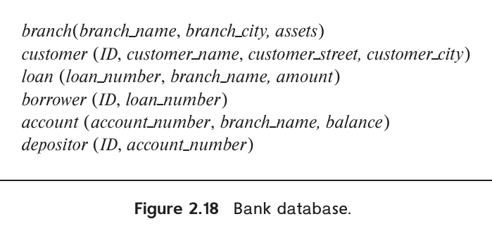
图2.18 银行数据库。 branch为支行，customer为客户，loan为贷款，borrower为借款人，account为账户，depositor为存款人。branch_name、branch_city、assets分别为支行名称、城市和资产；ID为客户编号；customer_name、customer_street、customer_city分别为客户姓名、街道和城市；loan_number为贷款编号，amount为贷款金额，account_number为账户编号，balance为余额。
译注：原书图2.17的雇员模式没有
ID属性，但习题2.8和2.14要求返回 ID。这里保留原图与原题，不另行假定字段。
2.8 对图2.17的雇员数据库，用关系代数表达以下查询：
a. 查找不在 BigBank 工作的每位雇员的 ID 和姓名。 b. 查找薪资至少与数据库中所有其他雇员一样高的每位雇员的 ID 和姓名。
2.9 关系代数的除运算“÷”定义如下。设 r(R) 和 s(S) 为关系，且 S ⊆ R，即 S 的每个属性都在 R 中。对元组 t，用 t[S] 表示 t 在属性集 S 上的投影。r ÷ s 是模式 R − S 上的关系，该模式包含 R 中有而 S 中没有的全部属性。元组 t 属于 r ÷ s，当且仅当同时满足：
- t 属于 ΠR−S(r)。
- 对 s 的每个元组 tₛ，r 都存在元组 tᵣ，同时满足 tᵣ[S] = tₛ[S] 和 tᵣ[R − S] = t。
根据上述定义：
a. 用除运算写出关系代数表达式，找出修过 Comp. Sci. 系全部课程的所有学生的 ID。提示：先将 takes 投影为只含 ID 和 course_id 的关系，再用选择表达式得到 Comp. Sci. 系全部 course_id 的集合，最后做除运算。
b. 不使用除运算，改写上述查询。这样也就说明了如何用其他关系代数运算定义除运算。
习题
2.10 说明“关系”与“关系模式”两个术语的含义有何区别。
2.11 考虑图2.9模式图中的 advisor 关系，其主键为 s_id。如果一名学生可以有多位导师，s_id 仍能作为主键吗？如果不能，应采用什么主键？
2.12 考虑图2.18的银行数据库。假设支行名称和客户姓名分别唯一标识支行和客户，但贷款与账户都可以关联多个客户。
a. 应选择哪些主键？ b. 根据所选主键，确定合适的外键。
2.13 为图2.18的银行数据库绘制模式图。
2.14 对图2.17的雇员数据库，用关系代数表达以下查询：
a. 查找在 BigBank 工作的每位雇员的 ID 和姓名。 b. 查找在 BigBank 工作的每位雇员的 ID、姓名和居住城市。 c. 查找在 BigBank 工作且薪资超过10,000美元的每位雇员的 ID、姓名、街道地址和居住城市。 d. 查找居住城市与所在公司城市相同的每位雇员的 ID 和姓名。
2.15 对图2.18的银行数据库，用关系代数表达以下查询：
a. 查找金额超过10,000美元的每笔贷款的贷款编号。 b. 查找拥有余额超过6,000美元账户的每位存款人的 ID。 c. 查找在 Uptown 支行拥有余额超过6,000美元账户的每位存款人的 ID。
2.16 列出数据库可能引入空值的两个原因。
2.17 比较命令式、函数式和声明式语言的优点。
2.18 使用大学模式，用关系代数表达以下查询：
a. 查找 Physics 系每位教师的 ID 和姓名。 b. 查找所在系位于 Watson 楼的每位教师的 ID 和姓名。 c. 查找至少修过一门 Comp. Sci. 系课程的每位学生的 ID 和姓名。 d. 查找2018年至少选过一个教学班的每位学生的 ID 和姓名。 e. 查找2018年没有选过任何教学班的每位学生的 ID 和姓名。
进一步阅读
IBM 圣何塞研究实验室的 E. F. Codd 于20世纪60年代末提出关系模型（[Codd (1970)]），并在同一论文中首次定义关系代数。这项工作使他获得1981年 ACM 图灵奖（[Codd (1982)]）。
Codd 提出关系模型后，围绕模式设计和各种关系语言的表达能力，形成了广泛的理论。介绍关系数据库理论的经典著作包括 [Maier (1983)]（可在线免费获取）和 [Abiteboul et al. (1995)]。
Codd 的原始论文促成了20世纪70年代中后期若干构建实用关系数据库系统的研究项目，包括 IBM 圣何塞研究实验室的 System R、加利福尼亚大学伯克利分校的 Ingres，以及 IBM T. J. Watson 研究中心的 Query-by-Example。Oracle 数据库也在同期以商业方式开发。
如今已有许多商用关系数据库产品，包括 IBM 的 DB2 和 Informix、Oracle、Microsoft SQL Server，以及 SAP 的 Sybase 和 HANA。流行的开源关系数据库包括 MySQL 和 PostgreSQL。Hive 与 Spark 是广泛使用的系统，支持在大量计算机上并行执行查询。
参考文献
[Abiteboul et al. (1995)] S. Abiteboul, R. Hull, and V. Vianu, Foundations of Databases（《数据库基础》）, Addison Wesley (1995).
[Codd (1970)] E. F. Codd, “A Relational Model for Large Shared Data Banks”（《大型共享数据库的关系模型》）, Communications of the ACM, Volume 13, Number 6 (1970), pages 377–387.
[Codd (1982)] E. F. Codd, “The 1981 ACM Turing Award Lecture: Relational Database: A Practical Foundation for Productivity”（《1981年ACM图灵奖演讲：关系数据库——提高生产率的实用基础》）, Communications of the ACM, Volume 25, Number 2 (1982), pages 109–117.
[Maier (1983)] D. Maier, The Theory of Relational Databases（《关系数据库理论》）, Computer Science Press (1983).
图片致谢
本章开头的帆船照片由 ©Pavel Nesvadba/Shutterstock 提供。